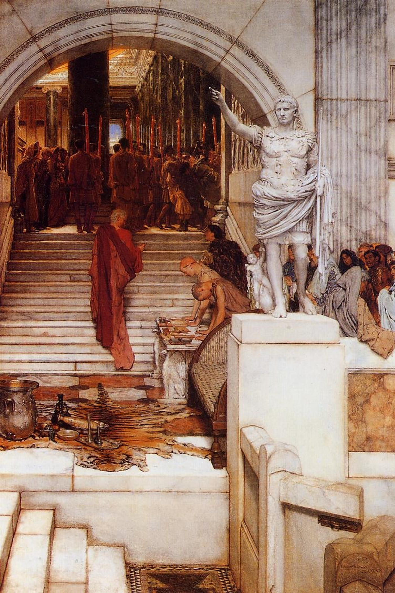

Entrance
读书入口 / Reading Entrance
《沉思录》最动人的地方，是它不像一本准备出版的书。What makes Meditations powerful is that it was not shaped like a book for publication.
它更像一位皇帝在军营、病痛、边境压力和行政疲劳之间，给自己留下的夜间手账。It reads like a night notebook written among camps, illness, frontier pressure, and administrative exhaustion.
马可·奥勒留没有把自己写成胜利者，他反复把自己拉回一件小事：今天这一刻，我还能不能做一个正直的人。Marcus does not pose as a victor; he returns to one small test: can I still act uprightly in this moment?
所以这次分享不把它当成格言集，而把它当成一套判断训练：怎样早晨醒来，怎样受伤之后不立刻反击，怎样面对死亡，怎样仍然对他人有用。This sharing treats it not as a wall of quotes, but as training in judgment: waking, being hurt, meeting death, and remaining useful to others.

Reading Path
这次分享的六个入口
一，先看它的处境。First, read the situation.
这是掌权者写给自己的防腐剂，不是成功学演讲。It is an antidote written by a ruler for himself, not a speech about success.
二，再看早晨。Second, read the morning.
马可预先知道会遇到难相处的人，所以先训练自己的反应。Marcus expects difficult people and trains his response before meeting them.
三，看判断。Third, read judgment.
他不否认痛苦，却拒绝把解释权交给痛苦。He does not deny pain, but refuses to surrender interpretation to it.
四，看死亡。Fourth, read death.
死亡不是恐吓，而是把事情的轻重重新排序。Death is not a threat; it rearranges the weight of things.
五，看他人。Fifth, read other people.
斯多葛不是退隐成冷漠，而是从怒气回到合作。Stoicism is not cold withdrawal; it returns anger to cooperation.
六，看今天。Sixth, read today.
每一句原文都要落回一个当下动作：少抱怨、少表演、多承担。Every source line should become an act: less complaint, less performance, more responsibility.
Reading Notes
四段读书笔记 / Four Reading Notes
一：早晨不是开始工作，而是开始预演人性。
第二卷开头不是鸡血，而是一种很冷静的心理预案：今天一定会遇到忙乱、忘恩、傲慢、嫉妒和不合群的人。Book II opens not with motivation, but with a sober rehearsal: today I will meet the meddlesome, ungrateful, arrogant, envious, and unsocial.
伦理含义是，把一天的主动权提前拿回来。不是幻想别人变好，而是先决定自己不把恶意复制一遍。Ethically, it takes back the initiative of the day: do not wait for others to improve before deciding not to reproduce their ugliness.
二：伤害常常不是事件本身，而是我加上的判断。
第四卷和第八卷反复提醒：外物触到身体、名声、计划，却不能直接进入灵魂；真正搅动人的，是我们在里面补上的解释。Books IV and VIII keep returning to this: events touch the body, reputation, and plans, but the disturbance grows from the judgment added within.
伦理含义不是装作没事，而是在反击前先问：我看到的是事实，还是我已经把事实翻译成了羞辱。This does not mean pretending nothing happened; it means asking before retaliation whether I saw a fact or translated it into humiliation.
三：死亡不是消极主题，而是价值排序工具。
马可不断说生命短、名声短、愤怒短，不是为了让人厌世，而是为了把虚荣、拖延和表演从重要事项里移出去。Marcus repeats that life, fame, and anger are brief not to make us despise life, but to remove vanity, delay, and performance from the center.
伦理含义是，不要把有限的一天交给无限的面子工程。能做的善，今天就做。Ethically, do not spend a finite day on infinite face-saving; the good that can be done should be done today.
四：真正的平静不是远离人，而是不背叛共同体。
很多人把斯多葛读成“别管别人”，但《沉思录》更常说的是合作、忍耐、教导、承担。马可提醒自己：人是为了彼此而存在。Stoicism is often misread as indifference, but Meditations keeps speaking of cooperation, endurance, teaching, and service.
伦理含义是，内心堡垒不是躲起来，而是让自己在复杂人群中仍能保持有用。Ethically, the inner citadel is not a hiding place; it lets one remain useful among difficult people.
Question For Today
今日问题 / Question for Today
今天让我最想抱怨、反击或证明自己的那件事，真的伤害了我的德性吗。Did the thing that made me want to complain, strike back, or prove myself really injure my character?
如果没有，我能不能把它变成一次练习：少一点戏剧化解释，多一个正直动作。If not, can I turn it into practice: less dramatic interpretation, one more upright act?